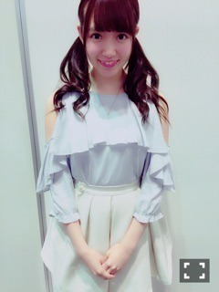
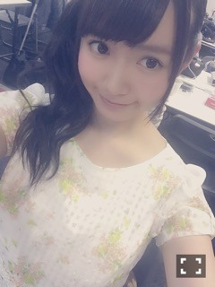
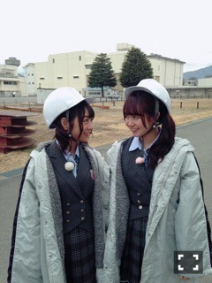
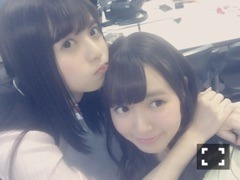

| 2016/05 05 Thu | ひめたん-0o0-その634 |
ナンバリング何度間違えたら
気がすむのだ中元よ、
ツッコむのも面倒だよねごめんね。
さて、4日5日は
京都で握手会でした！
ゴールデンウィーク＼(^o^)／
来てくださった皆さん
ありがとうございました！
声だいぶ治りました～！
◯全国握手会

ちーちゃんとペアでした！
中3組もそう、一番タイムリーなのは
NOGIROOMでお手紙を書いてくれた
ばかりでしたね(´,,•ω•,,｀)
全握でペアになると、パートナーは
どんなお話をするんだろうって
私いつも気になってるんですが
流石現役大学生、
勉強の相談とか、知的な話題が
多くてびっくりしました(´,,•ω•,,｀)
そのあとに私とかほんとごめんね。笑
温度差。申し訳ないばかりです。
ひめたんに会いに来てくれた方
嬉しかったです♡ありがとう♡
◯個別握手会
1部 おろし巻き
5部 ツインテール

らじらーで着てた服です～
好評でしたわーい
2部 ハーフアップ
3部 高めサイドポニー
4部 サイドおだんご

カーディガン着たり着なかったり
今っぽく肩に掛けたりしました
らじらーの妹対決が
楽しんでいただけたみたいで何より( ˆωˆ )
テレビ・雑誌・ライブの感想もありがとう！
ゴールデンウィークということで
名古屋も行ったよって方もたくさん
いらっしゃって嬉しかったです。
先週からこの数日間で
たくさんの方とお話して
たくさんパワー頂きました！
ゴールデンウィークも
アイドルしてたな～私たち。
来てくださった皆さん
ありがとうございました！
お仕事や学校応援してます(｀・ω・´)

「発掘！お宝ガレリア」
5/5 オンエアでした～
きいちゃんとふたりでお宝探ししました
楽しかった( ˆωˆ )
～お知らせ～
5/8 BOMB
5/8 乃木坂46の「の」
5/10 月刊Newtype
乃木ののに登場します！
1年1ヶ月ぶりですって！
堀・かりん・中元の3人で
お話しています( ˆωˆ )
アルバム新曲初解禁もあるよ！
文化放送では5/8 18:00～
詳しいことは番組公式サイトを
ご確認下さい。
その他のネット局では
いつ放送だろうって思ったそこのあなた！
今です、ラジオ番組表を開く時ですよ！

乃木坂46公式LINEとお友達の皆さん
私とあすかちゃんからの
仲良さそうな動画は届きましたか？
ビジネス仲良しですからね( ˆωˆ )
それにしてはなかなかそれっぽく見えるよね
京都全握ライブの最後に発表されました
2ndアルバム「それぞれの椅子」発売記念
46時間TV第2弾が放送決定！
6/10～12です！金土日！
何をするのかまだまだ決まっていませんが
楽しみにしてて下さい( ˇωˇ )
詳細は公式サイトにそのうち上がるかと。
あ、最後に！
NOGIBINGO!6
私とうぶんおやすみです！
アシ！何をしているのだ(´;ω;`)
毎回出るね～と言いながら毎回出ません
ごめんね！でも観てね！そのうち出るよ！
(＊´・ω・＊)
コメント(879)
2016/05/05 23:36